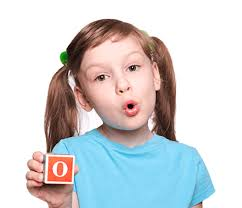
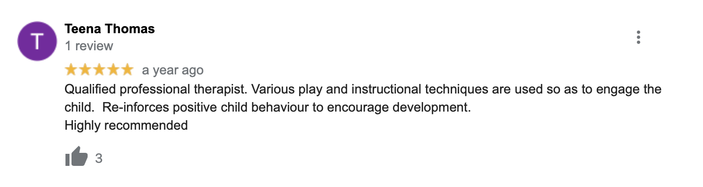
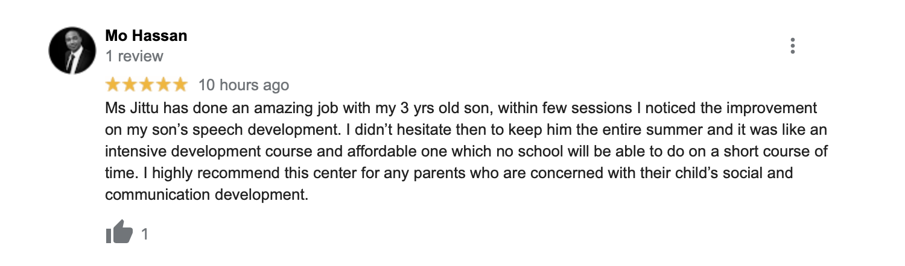
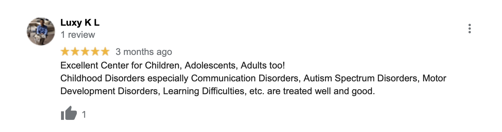

WELCOME TO OUR RESOURCES!
This website is designed to help parents understand misarticulation and support their children in improving their speech. Let's explore some helpful tips and resources together!
Welcome to our dedicated resource hub designed to empower parents and caregivers in understanding and addressing misarticulation in children. Misarticulation refers to the difficulties some children experience in pronouncing specific sounds or words correctly. This can lead to challenges in communication, which may affect their confidence and social interactions. Our mission is to provide you with valuable insights, practical tips, and a wealth of resources to help your child enhance their speech skills. Whether your child struggles with common misarticulations—like saying “wabbit” instead of “rabbit”—or faces more unique speech challenges, you’ll find supportive guidance tailored to your needs. We believe that every child has the potential to communicate clearly and confidently. By fostering a nurturing environment and engaging in fun activities together, you can encourage your child’s speech development and boost their self-esteem. Join us on this journey as we explore effective strategies, resources, and activities to help your child thrive in their communication skills!
DOCTORS AND THERAPISTS
-
Dr. Jane Smith
Pediatric Speech-Language Pathologist
Contact: (555) 123-4567
Email: jane.smith@example.com
-
Dr. John Doe
Speech Therapist
Contact: (555) 987-6543
Email: john.doe@example.com
-
Dr. Emily Johnson
Clinical Audiologist
Contact: (555) 654-3210
Email: emily.johnson@example.com
-
Dr. Michael Brown
Developmental Pediatrician
Contact: (555) 456-7890
Email: michael.brown@example.com
-
Dr. Johannas George
Speech-Language Pathologist
Contact: (555) 123-4567
Email: johannas.george@example.com
TIPS FOR PARENTS
- Encourage your child to speak slowly and clearly.
- Read books together to improve language skills.
- Be patient and supportive when your child speaks.
- Practice sounds and words during playtime.
- Use visual aids, such as pictures or toys, to illustrate words.
- Set aside time each day for conversation and storytelling.
- Model correct pronunciation without directly correcting them.
TIPS FOR CHILDREN
- Take your time when speaking; it’s okay to pause.
- Practice saying difficult words slowly and clearly.
- Play games that involve sounds and words, like rhyming games.
- Sing songs; it can help with pronunciation.
- Look in the mirror while practicing to see your mouth movements.
- Ask your parents for help if you’re unsure how to say a word.
- Have fun with speech! Use toys to create stories and practice speaking.
ADDITIONAL RESOURCES
REVIEWS
  FEEDBACK FORM
We would love to hear your thoughts! Please share your feedback below: